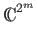
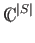
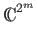
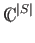
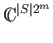
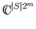

In the quantum oracle model, we have an oracle that holds an N-bit input string. Our task is to determine the value of some fixed Boolean function of the oracle string, using as few oracle queries as possible. An oracle query is a question of the form: ``What is the ith bit of the oracle string?'' The quantum oracle model is a special case of Ambainis' more general quantum adversary model [1], which we describe below.
In the quantum adversary model, we run an algorithm against an oracle
that contains a superposition of inputs. Let S be a subset of the
possible inputs
{0, 1}N. Algorithms in the quantum adversary
model will work in the Hilbert space
H = HA  HI, where
HA =  is the Hilbert space of our m-qubit
memory register, and
HI =  is the Hilbert space
spanned by basis vectors | x
HI, where
HA =  is the Hilbert space of our m-qubit
memory register, and
HI =  is the Hilbert space
spanned by basis vectors | x corresponding to the elements of
S. We think of HA as our algorithm space, and HI as our
input space. The tensor product of two vector spaces A and B,
denoted
A
corresponding to the elements of
S. We think of HA as our algorithm space, and HI as our
input space. The tensor product of two vector spaces A and B,
denoted
A  B, is a new vector space spanned by all possible
pairs (i, j) of basis vectors i from the first space and j from
the second space. Thus
H = .
B, is a new vector space spanned by all possible
pairs (i, j) of basis vectors i from the first space and j from
the second space. Thus
H = .
We can represent the basis states of our algorithm space as
| i, b, z , where i consists of
logN bits, b is a
single bit, z denotes all other bits our quantum algorithm requires.
We define the oracle transformation O as the unitary operator that
takes any eigenstate
| i, b, z
, where i consists of
logN bits, b is a
single bit, z denotes all other bits our quantum algorithm requires.
We define the oracle transformation O as the unitary operator that
takes any eigenstate
| i, b, z
 | x
| x to
| i, b xi, z
to
| i, b xi, z
 | x
| x . The first
logN bits of the subspace defined by a particular
input | x
. The first
logN bits of the subspace defined by a particular
input | x is the index i to the oracle bit xi that we
are querying. O is a permutation matrix.
is the index i to the oracle bit xi that we
are querying. O is a permutation matrix.
A quantum algorithm that performs T queries is just a sequence of unitary transformations
The standard oracle query model is just an instance of the quantum
adversary model where the input space is spanned by a single
eigenstate | x . In this case a quantum algorithm starts with
the state
| 0
. In this case a quantum algorithm starts with
the state
| 0
 | x
| x , applies
U0, O, U1,..., O, UT, and then measures the final state. The rightmost
bit of the measured state of the algorithm space is the output of the
algorithm on x. The algorithm computes f in the bounded error
setting if for every input
x
, applies
U0, O, U1,..., O, UT, and then measures the final state. The rightmost
bit of the measured state of the algorithm space is the output of the
algorithm on x. The algorithm computes f in the bounded error
setting if for every input
x  {0, 1}N, the output is f (x)
with some constant probability.
{0, 1}N, the output is f (x)
with some constant probability.
The measure of complexity in both the quantum oracle model and quantum adversary model is the number of oracle queries. It should be noted that querying the oracle is not always the most time consuming portion of an algorithm. For example, to factor an N bit integer that the oracle holds, we can determine the integer in N queries. However, we must then do 2N(1) additional steps in the classical case, or N2logO(1)N additional steps in the quantum case to factor the number using the best known algorithms [2]. Nonetheless we restrict our attention to the number of oracle queries required, as it is clearly a lower bound on the overall running time of the algorithm. Classical bounds for query complexity are well studied, making comparisons between quantum and classical oracle query complexity possible.